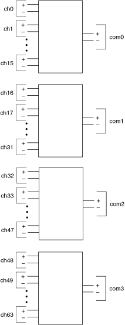

Use the NI TB-2630/2630B terminal block with the NI PXI-2530/2530B as a 2-wire quad 16×1 multiplexer. In this topology, the positive leads of the first bank (CH0+ through CH15+) route to COM0+, and the negative leads of the first bank (CH0– through CH15–) route to COM0–. The pair COM0+ and COM0– is addressed collectively as com0 in software. All other banks follow a similar routing scheme.
The following figure represents the NI PXI-2530/2530B in the 2-wire quad 16×1 multiplexer topology.

Both the scanning command, ch2->com0;, and the immediate operation, niSwitch Connect Channels VI or the niSwitch_Connect function with parameters ch2 and com0, result in the following connections:
signal connected to CH2+ is routed to COM0+
signal connected to CH2– is routed to COM0–
Refer to the NI PXI-2530 Signal Connections section for the NI PXI-2530 front connector pinout and NI TB-2630 terminal mapping. Refer to the NI PXI-2530B Signal Connections section for the NI PXI-2530B front connector pinout and NI TB-2630B terminal mapping.